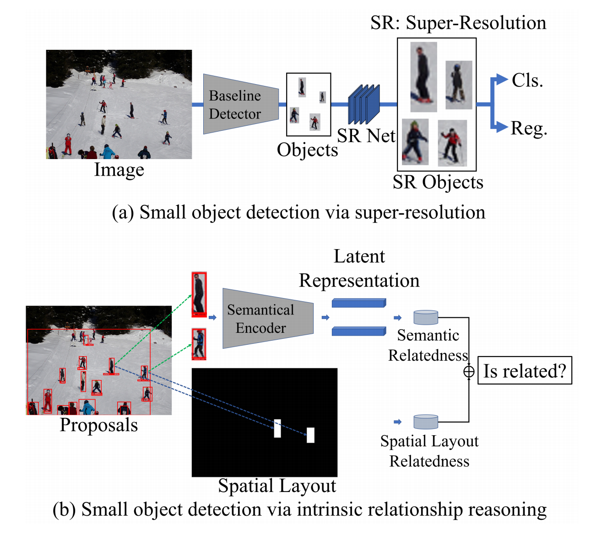
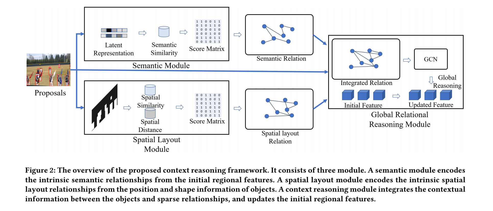
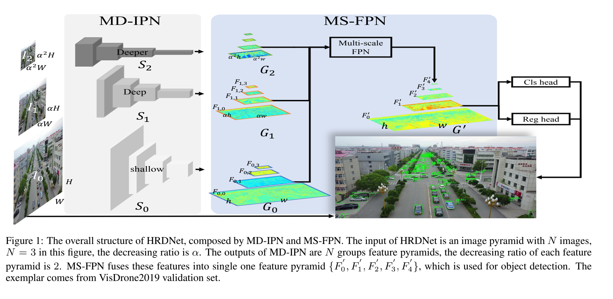
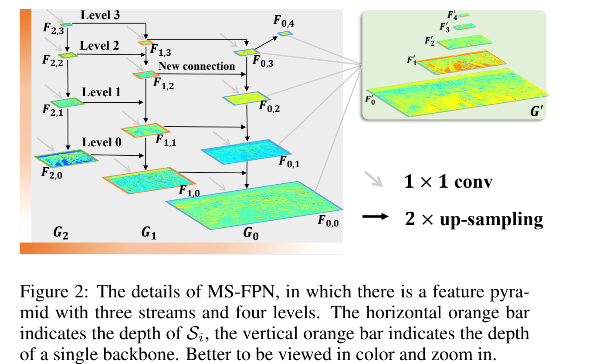

<!DOCTYPE html>
<html xmlns="http://www.w3.org/1999/xhtml" lang="zh" xml:lang="zh">
<head>
  <meta charset="utf-8" />
  <meta name="generator" content="pandoc" />
  <meta name="viewport" content="width=device-width, initial-scale=1.0, user-scalable=yes" />
  <meta name="last_modified" content="2021-03-18T21:53:26Z" />
  <meta name="published" content="Mar 17, 2021" />
  <title>Method Collection for 2D Small Object Detection</title>
  <link rel="stylesheet" href="/static/style.css" />
  <link rel="stylesheet" href="/static/syntax-highlighting.css" />
  <style>
      code{white-space: pre-wrap;}
      span.smallcaps{font-variant: small-caps;}
      span.underline{text-decoration: underline;}
      div.column{display: inline-block; vertical-align: top; width: 50%;}
  </style>
  <!--[if lt IE 9]>
    <script src="//cdnjs.cloudflare.com/ajax/libs/html5shiv/3.7.3/html5shiv-printshiv.min.js"></script>
  <![endif]-->
  <link rel="icon" href="/static/favicon.ico" type="image/x-icon"/> <link rel="shortcut icon" href="/static/favicon.ico" type="image/x-icon" />
  <meta name="author" content="Yanjie Ze">
  <meta name="viewport" content="width=device-width, initial-scale=1" />
  <script> window.dataLayer = window.dataLayer || []; function gtag(){dataLayer.push(arguments);} gtag('js', new Date());
  gtag('config', 'UA-116308654-1'); </script>
</head>
<body>
<a id="return" href="/">  </a>
<header id="title-block-header">
<h1 class="title">Method Collection for 2D Small Object Detection</h1>
<p class="date">Mar 17, 2021</p>
</header>
<p>论文来自网站：https://paperswithcode.com/task/small-object-detection/codeless</p>
<p>把这些方法大致看一下，具体的细节要是需要用到再看。</p>
<h1 id="一-关系推理">一、 关系推理</h1>
<p>论文：Intrinsic Relationship Reasoning for Small Object Detection</p>
<h2 id="idea">（1）idea</h2>
<p>核心问题： 1. 时间信息衰减 2. 捕捉语义特征</p>
<p>有一种方法：先检测，然后用super resolution network提高分辨率，再进行分类。但是缺点是计算量大。</p>
<p>idea是：人类在判断小物体的时候有时候是根据它所在的群体，比如一群大雁。因此找到物体间的内部语义关系说不定可以提高小目标检测。</p>
<p>这篇文章基于Graph Convolutional Network提出了一种context reasoning的方法。包含3个模块： 1. semantic module 2. spatial layout module 3. context reasoning module</p>
下图展示了SR网络和本文的网络的结构。
<center>

</center>
<h2 id="结构">（2）结构</h2>
<center>

</center>
<h1 id="二高分辨率">二、高分辨率</h1>
<p>论文：HRDNet: High-resolution Detection Network for Small Objects ## （1）idea High-resolution Detection Network (HRDNet)由两个部分组成：Multi-Depth Image Pyramid Network (MD-IPN) 和 Multi-Scale Feature Pyramid Network (MS-FPN).</p>
<p>HRDNet的主要思想是使用深backbone处理低分辨率图像，同时使用浅backbone处理高分辨率图像。对于小目标进行深度的特征提取。</p>
<h2 id="结构-1">（2）结构</h2>
总的结构：
<center>

</center>
MS-FPN的具体结构：
<center>

</center>
<a style="color:black;font-size:2em;float:right;margin-right:30px;margin-bottom:40px;" href="../">[Return to the homepage]</a>
<script>
var code_blocks = document.querySelectorAll("pre.sourceCode");
code_blocks.forEach(function(block) {
  block.classList.add("numberSource");
  block.classList.add("numberLines");
});
</script>
</body>
</html>
